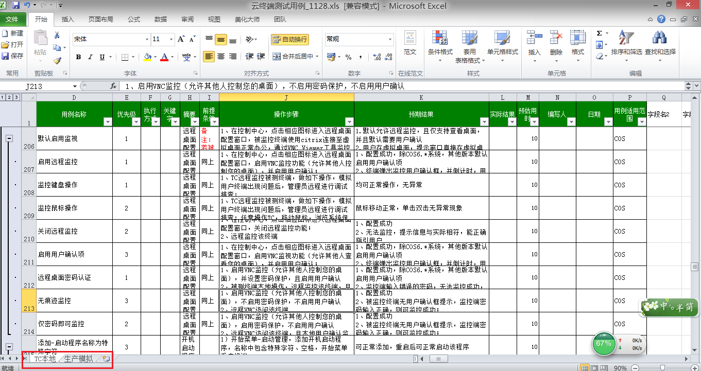

1、可以看到转换后有2个XML。因为该文件有两个标签页，所以最终结果会有两个XML文件。
将XML文件拆分是为了使转换后的XML文件不至于过大，过大的XML文件导入Testlink可能出现导入不成功的情况。
2、转换后的XML文件名与原文件名和标签页名对应。
3、在首页点击【编辑测试用例】进入该页，鼠标点击最上级写着项目名称的文件夹。

4、点击【齿轮符号】。
5、点击【导入测试用例集】。
6、点击【浏览】选择XML文件，再点击【上传文件】。
7、上传后可以看到ok提示，导入完毕。此处因为未提前导入需求，所以提示关联需求未成功。